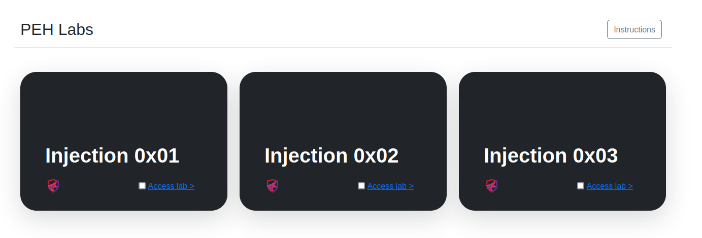

First will start the lab up from the docker:
to run the docker in the background than just add -d in the end.
sudo docker-compose up
Open Web-browser
http://localhost

Will pass some data and see what the sql database send us.

Step 1: Single and Double quotes
Here is some basic applciation that searches or queries the database.
Will send some basic payload like Jeremy which will return some results:
When u are assessing applications, it's important to try and take a little bit of time to understand what is the intention of the application, what did the developers have in mind for each piece of functionality and figure out how it works.
To test if we have injection, we can start with characters that might trigger an error such as single and double quotes.
We passed jeremy with sinhle and double quotes but didn't got any errir regarding it.
But why would this will trigger an error ?_?
Cuz often SQL queries are formed using single and double quotes
and sending this characters can break the SQL statement and throw a database error which sometimes is printed back to us.
Step 2: Logical Operators
Command: jeremy' 1=1#

If we use
jeremy' or 1=1#
at the end will use the terminator # aka pound sign or we can even use
jeremy' or 1=1-- -
So now we know that this application is vulnerable to sql injection.
As we know the backend is using MySQL and every database has different
payload and the mentor will share a cheat sheet later on to see that if we are working with Postgres or Oracle or Microsoft SQL Server.

We are sure now that the application is Vulnerable toSQL injection
UNION
Now will look how we can exfiltrate some other informaion out of the database.
And will be using the keyword Union as this information will retrive information from other tables and columns that were not initially defined.
There is one Constrainthowever when we union select we can only select the same number of columns as in the original query.
Now we can see that 3 columns are being selected

We can pass the version() to get the Sql version

There is more information being selected in the background but we are only able to some as the output.
Command: jeremy' union select null,null,table_name from information_schema.tables#

We got all the table names but we also want to know the column names
Command: jeremy' union select null,null,column_name from information_schema.columns#

Now will select jeremy's password:
Command: jeremy' union select null,null,password from injection0x01#

As we can see here it's not just selecting Jeremy's password but it selects all the passwords from that column.
Now there is one more constraint
We can select other data of the same type, but let's say each user had an id instead of a string. And 1st one is an int instead of a string so the email address is probably stored as a string, ID is stored as an integer.
If you try a union select a string into a column that's an integer you are going to get an error.

https://portswigger.net/web-security/sql-injection/cheat-sheet